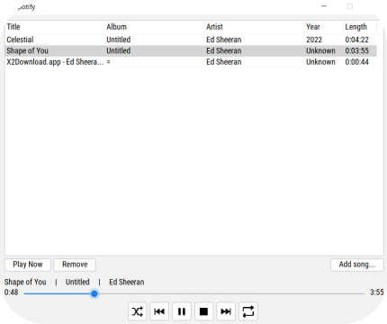
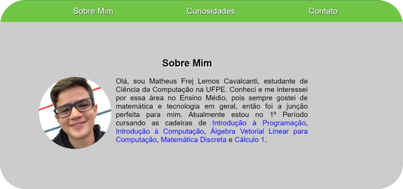

Sou um estudante de Ciência da Computação e tenho 21 anos. Atualmente, as áreas que tenho mais interesse são de Desenvolvimento Web, Aprendizagem de Máquina e Back-end. Nas experiências acadêmicas, sou Monitor Bolsista de Introdução à Programação e Programação 1 há 4 períodos ao todo. Nós realizamos diversas atividades como tirar dúvidas, construir e revisar listas de exercícios, entrevistar candidatos à monitoria e organizar planilhas.
Gosto de aprender sobre qualquer assunto. No tempo livre, curto sair com as pessoas que eu gosto, jogar, desenhar, andar na praia e organizar meu Notion.
Alguns dos projetos que fiz nesse tempo de faculdade não estarão exibidos abaixo por serem difíceis de visualizar, como bancos de dados e códigos em Verilog e em Haskell.
AluCar foi uma aplicação criada na cadeira de Engenharia de Software e Sistemas e é um sistema de locação de veículos. O sistema tinha tanto back-end quanto front-end, a principal ferramenta utilizada foi Angular e tinha várias funcionalidades que simulavam todo o processo de aluguel de um veículo.
Durante a cadeira de Infraestrutura de Software, fizemos um tocador de músicas mp3 utilizando concorrência em Java. Ele tem várias funcionalidades como tocar, modo shuffle, modo repeat, pular e voltar.
PokeFall foi um jogo feito durante a cadeira de Introdução à Programação utilizando pygame e conceitos de orientação à objetos. Nesse jogo você controla um pikachu skatista que atira raios em pokémon que caem do céu. Eles tem chance de soltar itens que ajudam o pikachu.
Esse site foi um projeto da cadeira de Introdução à Computação do primeiro período. Foi pedido para fazer um site me apresentando com apenas HTML, CSS e JavaScript. Foi uma boa introdução a essas ferramentas.
